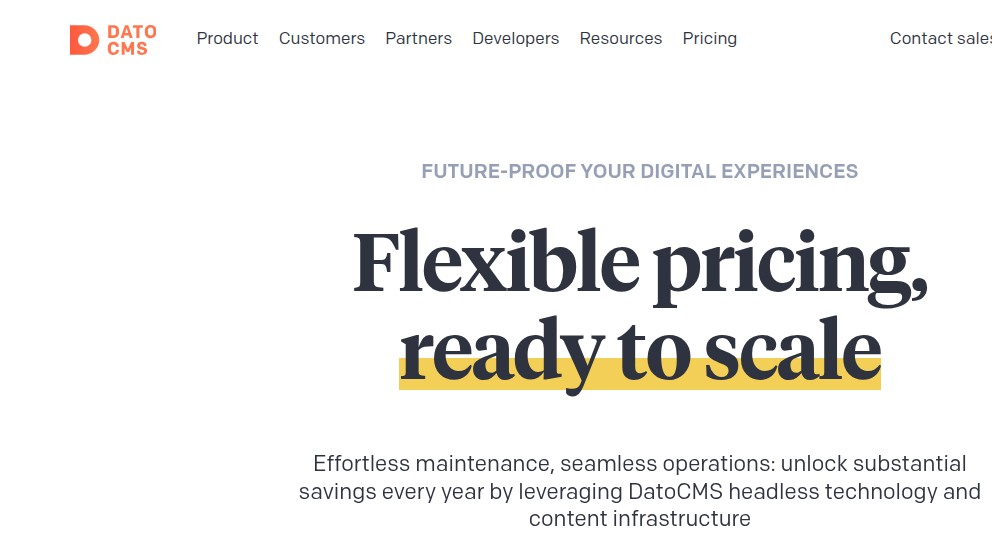
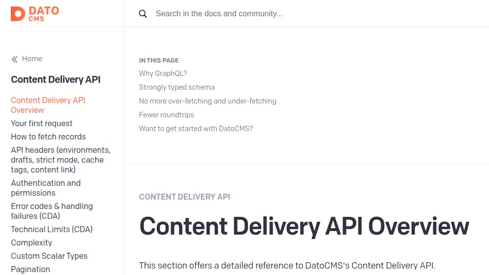
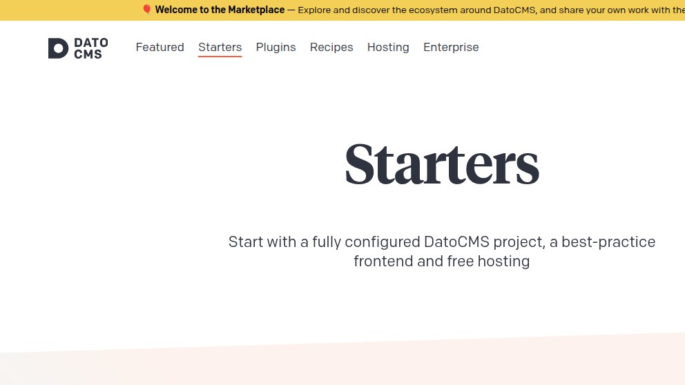

DatoCMS in 2026: GraphQL-first headless from Italy, with euro pricing on the box
DatoCMS is the rare commercial headless CMS that puts its tier prices directly on the marketing site, charges in euros, and ships its delivery API as GraphQL only. We spent an hour scouting it on 2026-05-07 the way a team comparing five tools would — read the pricing page, opened the public docs, then hit graphql.datocms.com and site-api.datocms.com with a real curl to see what the production endpoints actually return. Below: the verbatim 401 JSON, the rate-limit headers, the published tier numbers, the visual-editor pitch, and where DatoCMS sits next to Strapi, Directus, Contentstack and Hashnode.
We're the team behind SimpleReview, a Chrome extension that drafts code-fix PRs on whatever element you click on a broken admin or storefront. We are not affiliated with DatoCMS, not partners, not customers. This page is a scouting note from one real evaluation session on 2026-05-07: the public pricing page, the public docs, and a real curl against the production GraphQL and REST endpoints. We did not buy a Builder seat or sit through a sales call. If we got something wrong, open a GitHub issue and we'll fix it.
The first surprise — the pricing page is a pricing page
After scouting Contentstack the same week and finding a "Contact us" wall where the price tiers should be, opening https://www.datocms.com/pricing felt almost old-fashioned. The page leads with a serif headline — "Flexible pricing, ready to scale" — and below it lists four named tiers (Free, Builder, Team, Professional, with Enterprise as a fifth contact-sales tier) and the actual euro amount for each. The Italian heritage shows in two ways: the pricing is denominated in euros and the per-resource overage table is unusually detailed.

https://www.datocms.com/pricing via headless Chrome at 992×558. Headline reads "Flexible pricing, ready to scale"; below the fold the page lists Free / Builder / Team / Professional / Enterprise with euro amounts and per-resource overage rates.Per the page source the day we tested, the tier prices are €39/month (Builder), €149/month (Team), €199/month (Professional), with a Free tier and Enterprise on contact. What makes the page useful is the overage line items — every resource that can grow has a per-unit rate:
- €9/mo per extra collaborator on the seat axis.
- €39/mo per extra project and €39/mo per extra sandbox environment.
- €10/mo every 10 extra models.
- €19/mo per extra locale.
- €9/mo every 10k extra records.
- €9/mo every 1M extra CDA API calls; €9/mo every 100k extra CMA API calls.
- €29/mo every 150GB of extra traffic (CDN bandwidth).
- €9/mo every 12k mins of extra video processing.
Every dimension you'd want to forecast has a price tag. Rare on enterprise SaaS in 2026, and it shortens evaluation by hours — you can answer "what does year two cost if the editorial team doubles" in twenty minutes, without a discovery call.
The second surprise — the delivery API is GraphQL-only
Most headless CMSes give you a REST surface for content reads and treat GraphQL as an optional flavor. DatoCMS does the opposite. The Content Delivery API at graphql.datocms.com is the only way to read public published content — there is no GET /v3/entries. The Content Management API at site-api.datocms.com is the REST one (JSON:API-flavored), used for editorial writes and admin operations. Two endpoints, two protocols, one schema model behind both.
We hit both with deliberately bad credentials to see the production error shape. First the GraphQL endpoint:
$ curl -s -i -X POST https://graphql.datocms.com/ \
-H "Content-Type: application/json" \
-H "Authorization: Bearer invalid_token_test" \
--data '{"query":"{ _site { globalSeo { siteName } } }"}'
HTTP/2 401
date: Thu, 07 May 2026 16:35:54 GMT
content-type: application/json; charset=utf-8
cf-ray: 9f81a3f63d59dc86-FRA
cf-cache-status: BYPASS
server: cloudflare
strict-transport-security: max-age=15552000; includeSubDomains; preload
access-control-allow-headers: authorization, content-type, x-environment,
x-organization, x-site-domain, x-api-version, user-agent, x-session-id,
x-include-drafts, x-exclude-invalid, x-visual-editing,
x-base-editing-url, x-cache-tags, x-datocms-trace
access-control-expose-headers: x-ratelimit-limit, x-ratelimit-remaining,
x-ratelimit-reset, x-complexity, x-max-complexity, x-cache-tags
x-cacheable-on-cdn: true
x-cacheable-on-cdn-query-length-limit: 176/12000
x-ratelimit-limit: 40
x-ratelimit-remaining: 39
x-request-id: 55fe727c-aaa1-4b41-8ed5-cd170ff24367
x-runtime: 0.007471Body of the response, verbatim:
{
"data": [
{
"id": "5413bc",
"type": "api_error",
"attributes": {
"code": "INVALID_AUTHORIZATION_HEADER",
"details": {},
"doc_url": "https://www.datocms.com/docs/content-management-api/errors#INVALID_AUTHORIZATION_HEADER"
}
}
]
}That is one of the better-shaped error envelopes on a public CDN-fronted endpoint we've seen this year. The list-of-errors structure is JSON:API. code is a stable string an integration can branch on. doc_url points straight at the documented explanation — most vendors don't ship that link in the response. x-runtime: 0.007471 says seven milliseconds end-to-end, validated at the edge by Cloudflare's Frankfurt POP.
The response headers do real work. x-ratelimit-limit: 40 with x-ratelimit-remaining: 39 publishes the budget without an extra round-trip. x-cacheable-on-cdn-query-length-limit: 176/12000 is a cache hint we have not seen elsewhere — GraphQL queries shorter than 12000 characters are CDN-cacheable, and the header reports the size of the one you just sent. The access-control-allow-headers list enumerates the feature set: x-include-drafts (preview), x-environment (sandbox/branch), x-visual-editing (editor overlay), x-cache-tags (surgical purges), x-datocms-trace (query tracing).
For contrast, the REST CMA returned a different stable code from the same JSON:API envelope:
$ curl -s -i -X POST https://site-api.datocms.com/items \
-H "Accept: application/json" \
-H "X-Api-Version: 3"
HTTP/2 401
content-type: application/json; charset=utf-8
cf-ray: 9f81a429de58ebd2-FRA
x-request-id: 9fb68470-fd19-4294-881e-c90829a43c08
x-runtime: 0.004129
{"data":[{"id":"02f293","type":"api_error","attributes":{
"code":"INVALID_SITE","details":{},
"doc_url":"https://www.datocms.com/docs/content-management-api/errors#INVALID_SITE"
}}]}Different code (INVALID_SITE vs INVALID_AUTHORIZATION_HEADER) for the same "we don't know who you are" condition. The CMA distinguishes "no Site header / wrong project" from "bearer token malformed" — a misconfigured CI integration gets an error that points at the actual misconfiguration, not a generic "auth failed". That subdivision saves an afternoon of debugging six months in.
What's behind the wall — the visual editor pitch
DatoCMS's product surface is built around four ideas: GraphQL-first delivery, a structured-text editor that returns a typed AST instead of HTML soup, a blocks system that composes pages from typed components, and a real-time collaborative visual builder. We could not run the editor without a paid seat, but the public docs give the shape:

datocms.com/docs/content-delivery-api. The left sidebar enumerates the developer surface: complexity budget, custom scalar types, pagination shape, and a dedicated "Error codes & handling failures" section. Captured 2026-05-07.The docs sidebar surfaces things most CMS docs hide: a Complexity page (DatoCMS bills GraphQL queries by a complexity score — exposed as the x-complexity and x-max-complexity response headers we saw on the curl above), a Custom Scalar Types page (their JsonField, BooleanType, FloatType, ItemId scalars), and a Technical Limits (CDA) page that names the actual numbers — query length cap, depth, complexity per query. These are the exact pieces a senior engineer asks about before signing — and DatoCMS publishes them all without a login.
The Marketplace section adds something we did not expect: a Starters catalog with one-click frontends for Next.js, Astro, Remix, Nuxt and SvelteKit, a Plugins catalog for editor extensions, and a Recipes section with "if you want X, copy this snippet" patterns. None of that is hidden behind the dashboard.

datocms.com/marketplace/starters. Pre-built Starters for Next.js / Astro / Remix / Nuxt / SvelteKit, plus Plugins, Recipes, Hosting and an Enterprise tab. Captured 2026-05-07.What the API actually does — the pieces that matter
From the docs and the headers our curl returned, the operative shape of DatoCMS for a developer is:
| Surface | Endpoint | Protocol | What it does |
|---|---|---|---|
| Content Delivery (read) | graphql.datocms.com | GraphQL POST | Read published content. Cloudflare-fronted, CDN-cacheable up to ~12k char queries. |
| Content Management (write) | site-api.datocms.com | REST / JSON:API | Editorial writes, schema, item types, sandbox environments, webhooks. |
| Image / Asset CDN | www.datocms-assets.com | HTTPS GET | Imgix-fronted asset transforms (resize, format, focal-crop) on URL params. |
| Real-time updates | graphql-listen.datocms.com | GraphQL over WebSocket | Subscriptions for live preview / collaborative editor. |
| EU host (default) | graphql.datocms.com | — | Production stack. The IP block resolves through Cloudflare to EU POPs. |
| US host | us.datocms-assets.com | — | Region-specific asset hostname (per the docs index). |
The complexity-as-billing model is the one piece that needs a paragraph. Instead of charging per HTTP call (which would penalize GraphQL, where one query replaces five REST calls), DatoCMS scores every query by the fields requested, with a per-tier ceiling. The x-complexity and x-max-complexity headers are exposed on every response, so you tune cost in the same loop you tune correctness. Same model as Shopify and GitHub's public GraphQL APIs — right idea, rare on commercial CMSes.
Honestly, next to Strapi / Directus / Contentstack / Hashnode
We've now done this scouting walk on five products in a week. The contrast helps:
| Dimension | DatoCMS | Strapi / Directus / Payload | Contentstack | Hashnode |
|---|---|---|---|---|
Public pricing on /pricing |
Five named tiers, euro numbers, every overage rate visible. | Self-host: free. Cloud tiers: published per-project numbers. | "Contact us" only. | Free for the blogging product. Headless API requires a PAT. |
| Read API protocol | GraphQL only. No REST read. | REST (Strapi, Directus, Payload). GraphQL optional. | REST CDA. GraphQL was added later as an opt-in surface. | GraphQL only. |
| Write API | REST CMA at site-api.datocms.com (JSON:API). |
Same REST surface as the read API. | REST CMA, separate from the CDA. | GraphQL mutations on the same endpoint as reads. |
Time to first authenticated curl |
Sign up free, generate a read-only token, ~5 minutes. | ~10 minutes from docker run to authenticated GET. |
Behind a sales call. No public sandbox URL we found. | ~3 minutes — public publication queries need no auth. |
| Compliance posture | EU SaaS, GDPR-native, SOC 2 available. | You inherit your own posture. | SOC 2, ISO 27001, HIPAA available — sold via account managers. | SaaS posture inherited from Hashnode Inc. |
| Editor model | Structured text + typed Blocks + visual builder. | Schema-first, rich-text plugin (TipTap / Lexical) per stack. | Personalization engine, brand-aware AI writing, gated. | Hashnode editor (markdown + Hashnode-specific blocks). |
| Vendor lock-in | Medium. Schema-as-data, but content lives in their stack. Export tooling exists. | Low. The DB is yours. Migration is a SQL dump. | High. Content lives in their stack; export tooling exists but you're a customer. | Medium. Posts portable as Markdown; Hashnode-specific embeds aren't. |
The shape of DatoCMS in this lineup is "the commercial answer to Strapi, with EU billing and a real visual editor on top." If you're building a marketing site for a localized brand and the editorial team is non-technical, the structured-text-plus-blocks editor and the localized-by-default model is a real selling point that the open-source three don't ship without plugin work. If you're building a developer-led product with a small editorial team, self-hosting Strapi or Directus on a €5/mo box stays cheaper for years.
Quiet warnings worth knowing
- Locales count separately on the seat math. €19/mo per extra locale adds up fast on a 12-language brand site. The default tiers include a small number; a real internationalized site moves into Team or Professional just on locale count.
- The Free tier is real but small. Useful for a side project, not a company landing page. The Builder tier at €39/mo is the realistic floor.
- Sandbox environments are €39/mo each. If you want one preview environment per Git branch, the bill grows quickly. Most teams settle on staging plus production and do branch previews with the per-request
x-environmentheader against the staging sandbox. - Complexity budget is per query, not per request. A naive "give me everything for this page" GraphQL query can hit the per-query ceiling on the Builder tier. The error code is documented; the docs page on Complexity is the one to read before you ship.
- Real-time updates are a separate hostname.
graphql-listen.datocms.comneeds WebSocket support in your Next.js / edge runtime. Vercel and Cloudflare Workers handle it; some serverless setups do not.
Things we'd change in the docs
- Publish a worked example of the complexity score. The Complexity page tells you the model exists and reads back the headers; a worked example of "this query scored 47, here's why, here's how to drop it to 12" would close the gap between knowing the rule and tuning against it.
- Surface the JSON error envelope on the Authentication page. The
doc_urlfield in the error body is excellent; the docs page that documents the field is buried two clicks deep. A "what an error looks like" block right at the top of Authentication would shorten time-to-first-handled-error for new integrators. - Add a one-page "what migrating from Strapi looks like" recipe. The Marketplace has Starters but not migration paths from the open-source incumbents. Schema-as-data on both sides; the mapping is mostly mechanical and could be a script.
- Keep the per-resource overage rates visible. The pricing page shipping €9 / €19 / €29 / €39 unit rates is rare and good. Don't move them behind a "Calculate your price" widget — the table is the trust signal.
What we'd actually do
If we had a Berlin-based or Milan-based startup with a non-English brand site, an editorial team that hates Markdown, and the need to pay an EU vendor, DatoCMS would be on the shortlist with Storyblok. The euro pricing, the GDPR-by-default posture, the visual builder, and the developer surface that doesn't apologize for itself — those are real. If we had a developer-led product with a tiny editorial team and a budget that has to survive a recession, we'd self-host Strapi or Directus and revisit when the editorial team grew. If we had a Fortune-500 retail brand, we'd put DatoCMS next to Contentstack on a procurement spreadsheet and the answer would depend on which sales team picks up the phone first.
Where this fits
Adjacent scouting notes from the same week: Strapi — the open-source headless default, Directus — SQL-first with a real admin, Payload — TypeScript-first headless, Contentstack — behind the "Contact us" wall, Hashnode — headless GraphQL on a hosted blog, Ghost — the headless-blog wedge. SimpleReview is the Chrome extension that turns whatever element you click on a broken admin or storefront into a draft code-fix PR — it works on a DatoCMS-rendered front end the same way it works on a Strapi one, because by the time the page renders it's just HTML.
Demo: SimpleReview on a DatoCMS issue

"extensions":{"code":"INVALID_AUTHORIZATION_HEADER"},
"doc_url":"https://datocms.com/docs/content-delivery-api/authentication"
}]}
X-API-Token header — not Authorization Bearer.